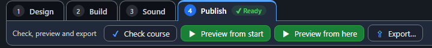
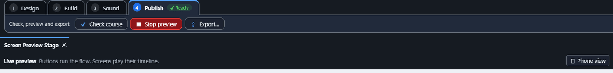
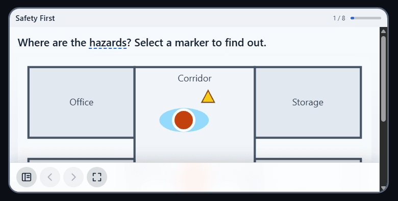
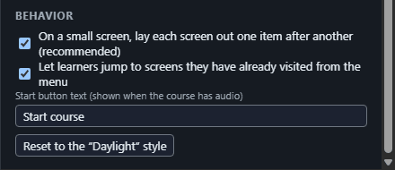
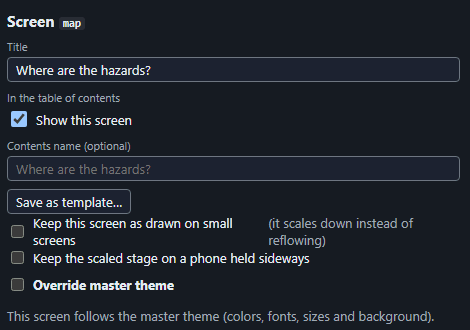

Small screens and the phone view
On a narrow window, such as a phone, every screen reflows into one column that reads from the top, wraps its text and can be zoomed, instead of shrinking the whole 16:9 picture. Words that sit on a card stay on that card, a speech bubble keeps its text, and a shape that is only decoration is left out.
- See it: start the live preview (the Publish tab), then press ▯ Phone view in the preview bar. The preview is shown inside your course player, with its title, progress, controls and captions, so what you see is what a learner gets. The buttons then read Upright and Sideways (hold the phone either way) and Full screen (back to the normal preview). A screen that keeps the scaled picture on a sideways phone shows that way in the Sideways view.
The Publish tab has Preview from start and Preview from here:

While the preview runs, the Phone view button is at the right of the preview bar:

Phone view held upright: the screen is one column with the heading, the picture and its markers, and the button, inside the course player:

Phone view held sideways: the same one-column page, which scrolls:

- Reading order decides the order. Check it in the Reading order list (it is the same list screen readers use). Put the heading first and the buttons where they belong.
- Cards and panels: put the words on a shape to make a card. In the reflowed page the card is a box holding those words.
- Turn it off for the whole course: in Player…, untick On a small screen, lay each screen out one item after another.

- Keep one screen as drawn: select the screen and tick Keep this screen as drawn on small screens. Use it for a map or similar, where the layout is the point. Check course warns about both choices because a screen kept as drawn cannot be zoomed.

- On a narrow screen, fade-in and fade-out animations still play, but movement, size changes, keyframes and appear-later timing do not: everything is shown in place. A phone held sideways also gets this one-column page, since the scaled picture would be tiny. Captions stay just above the control bar as the page scrolls, and in the preview's phone view they stay at the bottom of the phone frame.